<div class="content">
    <div class="colors dark">
        <h1 class="color-text">Project 1</h1>
        <h3 class="color-text">interface to a smart object</h3>
        <hr>
        <h2 class="color-text">Exploration Sketches</h2>
        <hr>
        <div class="img-wrap">
            
        </div>
        <br>
        <div class="img-wrap">
            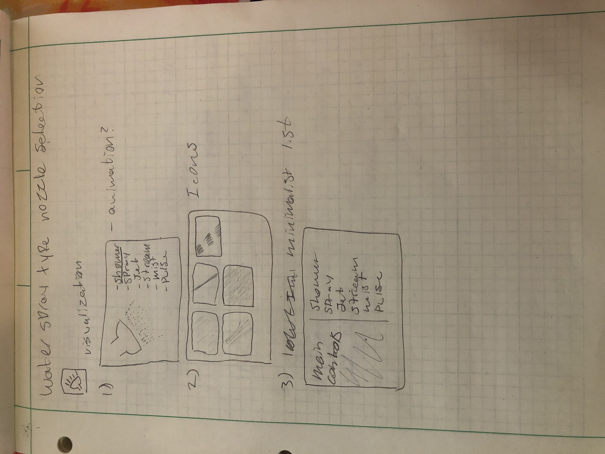
        </div>
        <br>
        <div class="img-wrap">
            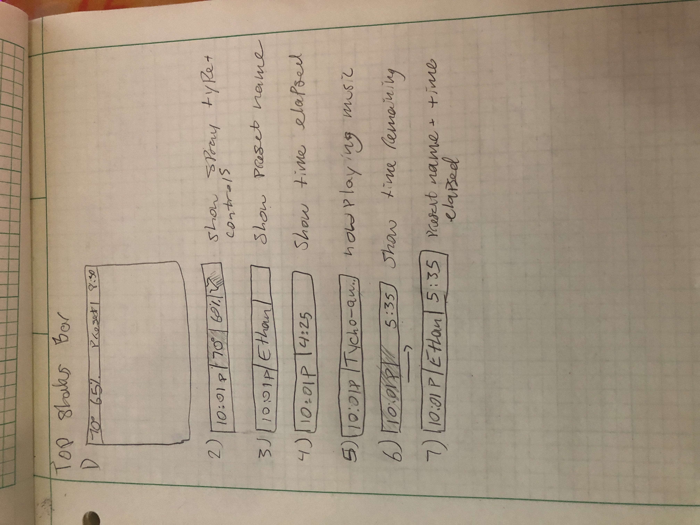
        </div>
        <br>

        <h2 class="color-text">Final Sketches</h2>
        <hr>
        <div class="img-wrap">
            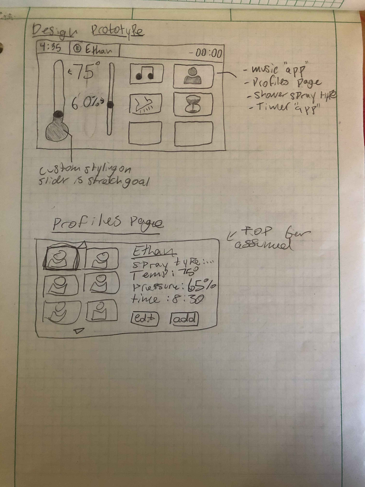
        </div>
        <br>
        <div class="img-wrap">
            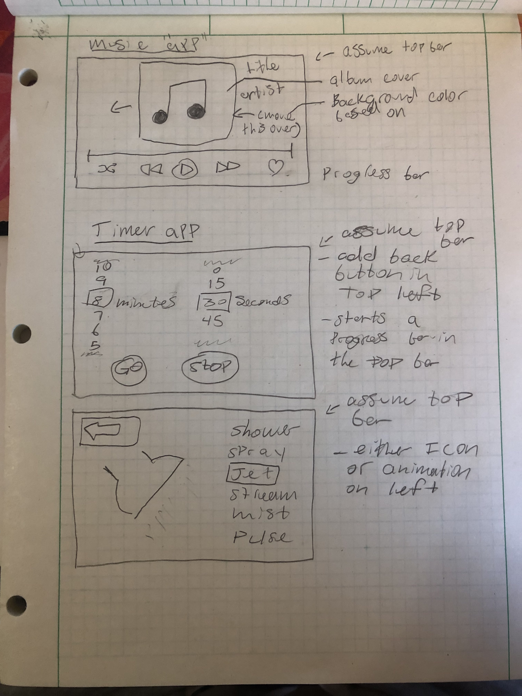
        </div>

        <h2 class="color-text">Requirements & Interview Findings</h2>
        <hr>
        <p>My initial requirements that I settled on were having the main page hold the most important controls: water temperature and water pressure, and putting all other controls into submenus accessible from the main page via "app" buttons. The "apps" to be included were: Profiles, Timer, Music player and Shower spray pattern.</p>
        <p>There would also be a status bar at the top that showed the user the most important information, including the real time and time remaining in the shower. </p>
        <p>Through my interview findings I learned that my intentions for many of the controls were unclear. For example I did not initially have a label on the water pressure setting so people did not know what the percentage on the main page was. People also did not immediately understand the "-00:00" for time remaining at first, I suspect that this was due to it being a sketch and not also not being labeled.</p>
        <p>A point that stood out to me pointed out that I did not have back buttons on every page, which I had envisioned when designing the pages, yet forgot to include in the sketches.</p>

        <h2 class="color-text">Detailed Description of interface</h2>
        <hr>
        <h3 class="color-text">Main Page</h3>
        <div class="img-wrap">
            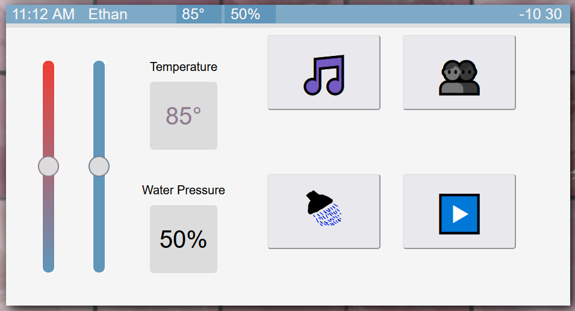
        </div>
        <p>The main page is where the primary control are, as well as the buttons to access the other pages. I will describe the controls from left to right then up to down.</p>
        <p>The first control on the page is the water temperature slider. The slider is a range between 55 and 120 degrees. All degrees are assumed to be in F</p>
        <p>Next is the water pressure slider, which can be anywhere from 0-100% of the maximum pressure of the system.</p>
        <p>Next to the 2 slider controls are the value displays for them. They update in real time as the sliders are manipulated.</p>
        <p>After the main controls is the buttons area, the buttons are: Music page button, Spray pattern page button, Profiles page button, and pause play button.</p>
        <p>The Music page buttons navigates the user to the music control page.</p>
        <p>The Spray pattern page button navigates the user to the spray pattern page.</p>
        <p>The Profiles page button navigates the user to the profiles page.</p>
        <p>The Pause Play button turns the water on or off. It also plays or pauses the timer.</p>
        
        <h3 class="color-text">Top Bar</h3>
        <div class="img-wrap">
            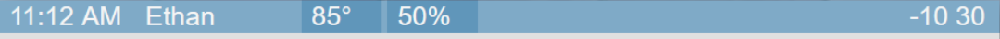
        </div>
        <p>The top bar is present on every page. From left to right it displays: The real time, the Name of the active user, the current temperature, the current water pressure, and the Time remaining on the current timer.</p>
        <p>There is also a progress bar along the bottom that tracks from when the current shower started to it's scheduled end time.</p>

        <h3 class="color-text">Music Player page</h3>
        <div class="img-wrap">
            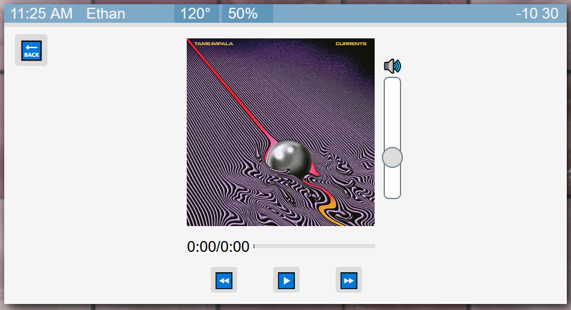
        </div>
        <p>The music player allows the user to listen to music loaded into the interface while showering.</p>
        <p>This function is mostly a proof of concept and not a full implementation, there is currently only 1 song <a href="https://youtu.be/2SUwOgmvzK4">(The Less I know the better - Tame Impala)</a> that can be played as a sample.</p>
        <p>The controls on the page are as follow. There is a back button that nagivates the user to the main page. The back arrow button sends the song back to the beginning. The Pause Play button pauses or plays the music. The forward arrow button does not have a function but in a fully operational music player it would skip to the beginning of the next track. Finally, the volume slider controls the volume of the audio output.</p>
        <p>There is also a time display that shows the current position in the track by showing both a progress bar and a timer that shows the track's real length.</p>
        
        <h3 class="color-text">Shower spray pattern page</h3>
        <div class="img-wrap">
            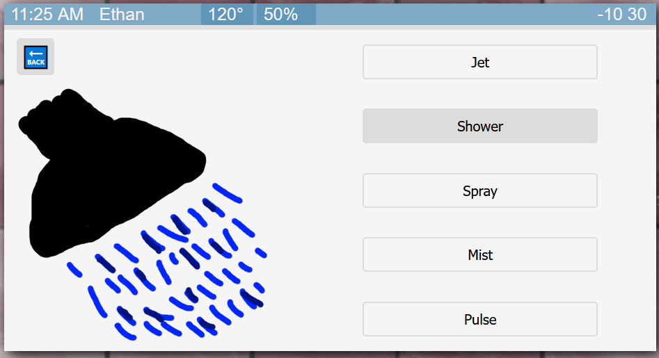
        </div>
        <p>The shower spray pattern page's main control is switching the type of the spray pattern from the shower head. Clicking an option button will switch the spray pattern of the head instantly. When switched there is an icon that represents the active option.</p>
        <p>The button options are: Jet, Shower, Spray, Mist, and Pulse.</p>
        <p>Lastly, there is a back button that nagigates the user back to the main page.</p>

        <h3 class="color-text">Profiles page</h3>
        <div class="img-wrap">
            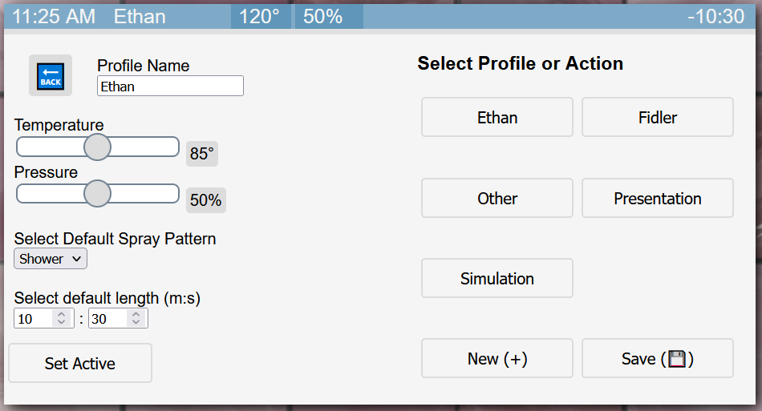
        </div>
        <p>The profiles page is where the user can create, load or edit setting profiles to control the shower.</p>
        <p>The settings included in each profile are: Profile Name, default Temperature, default Pressure, Default spray pattern, and Length of shower.</p>
        <p>When the user clicks the "Select Active" button, the values currently loaded into the settings input boxes are made the active values of the shower, whether or not the values currently in the box reflect a profile's stored values or not.</p>
        <p>The right side of the page has the "Select Profile or Action" area, which is where all of the existing profiles are displayed as buttons. Clicking a profile button replaces the values on the left side of the screen with the ones from the profile selected. Note that this does not set the profile active.</p>
        <p>At the bottom of the right side of the screen There are 2 buttons, "New (+)" and "Save (💾)". The New button empties all of the values on the left side of the screen so the user can start over and add new ones. The Save button takes the values from the left side of the screen and adds them as a profile, adding a new button with the Profile's name. If the new profile shares a name with a currently existing one then that profile's stored values will be overwritten</p>
        <p>In the top-left hand corner of the page there is a back button that navigates the user back to the main page.</p> 

        <h3 class="color-text">Alerts</h3>
        <div class="img-wrap">
            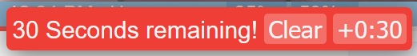
        </div>
        <p>When the timer reaches 30 seconds remaining, it will put an alert at the top of the screen asking if the user wants to add 30 seconds the user can clear the alert or add 30 seconds.</p>
        <br>
        <div class="img-wrap">
            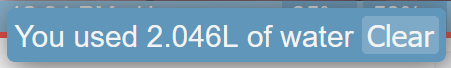
        </div>
        <p>When the timer reaches 0 seconds remaining the shower will be stopped and the amount of water used over the length of the shower (calculated using the water pressure over the length of the shower) will be displayed to the user in Liters. The user can clear the alert</p>

        <h2 class="color-text">Video Demo</h2>
        <hr>
        <div class="img-wrap video-wrapper">
            <iframe width="100%" src="https://www.youtube.com/embed/gGNcZlj4RoQ" title="YouTube video player" frameborder="0" allow="accelerometer; autoplay; clipboard-write; encrypted-media; gyroscope; picture-in-picture" allowfullscreen></iframe>
        </div>
        <br>
    </div>
</div>
